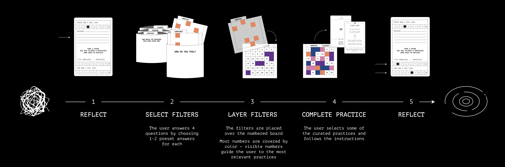
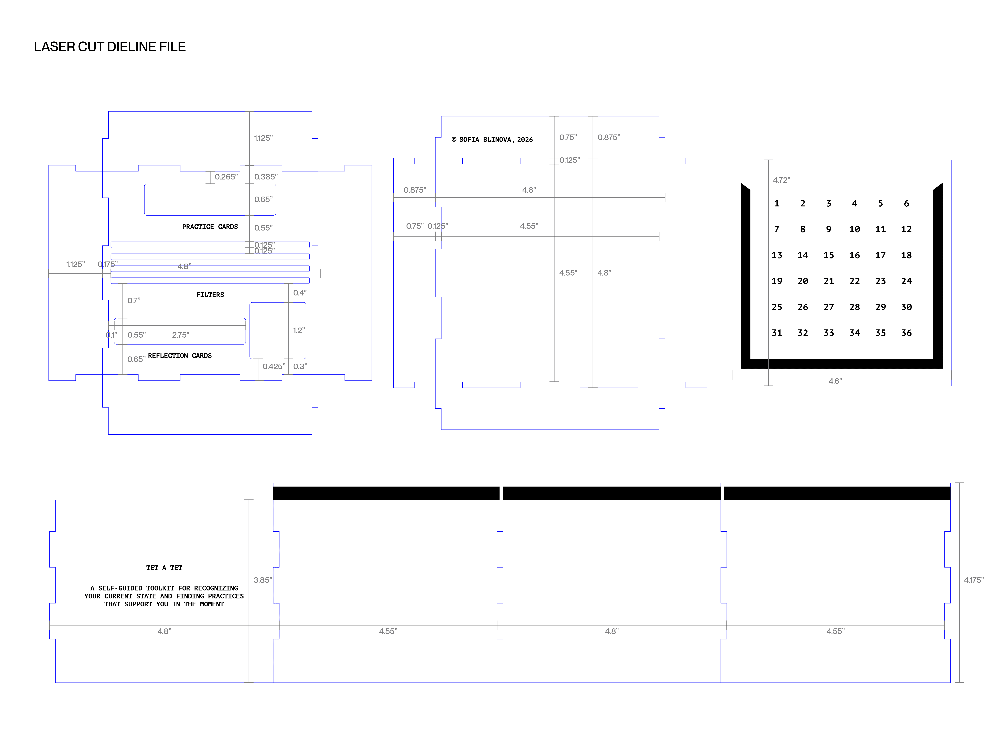
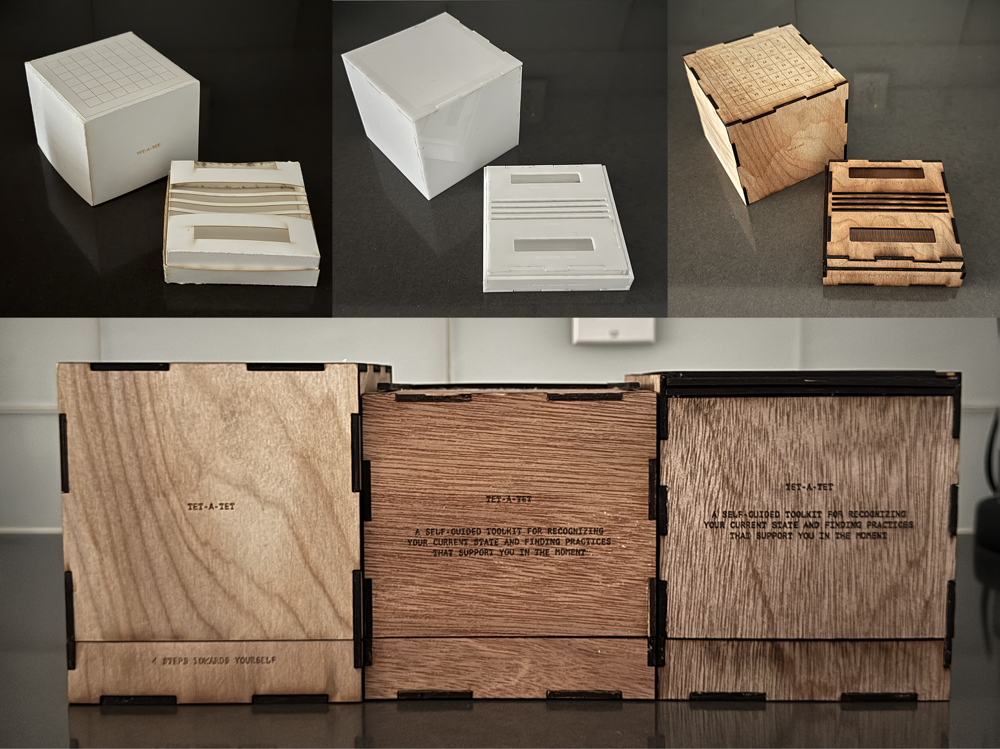
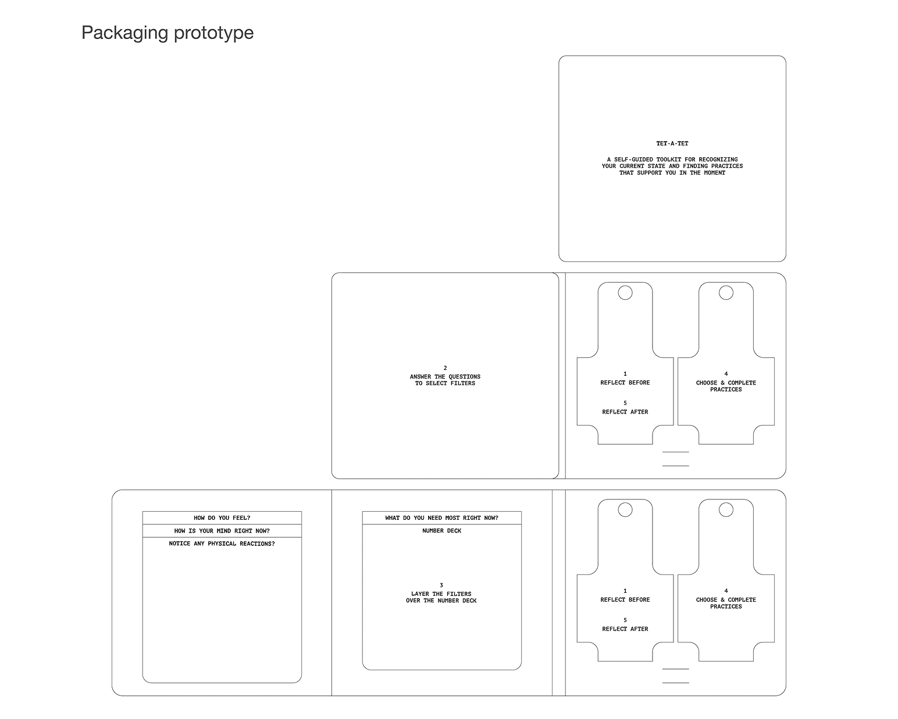
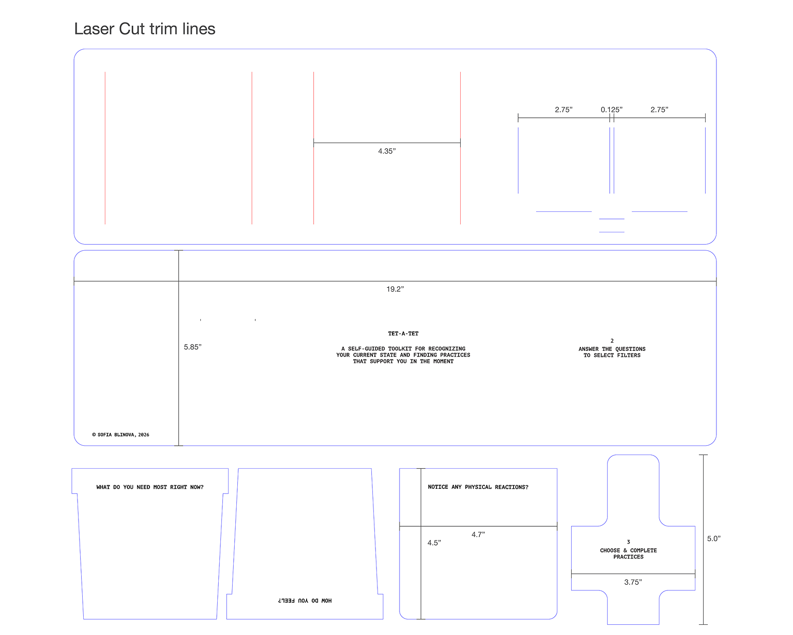
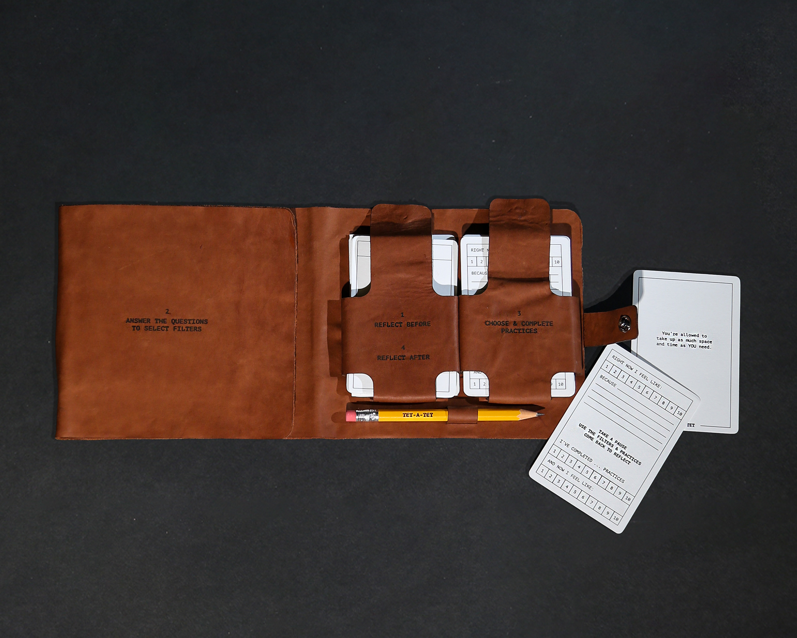

Tet-à-Tet is a self-guided toolkit designed to help you recognize your current state and find somatic practices that support you in the moment.
This 5-step system is designed to narrow down relevant somatic practices based on the user’s emotional, mental, and physical state. By answering guided questions, preset responses act as filters, leaving a small set of practices aligned with the moment.
The process shifts the focus from finding a solution to connecting with yourself, making emotional regulation more accessible in the moment.


The In-House Kit is designed for use in a private space, supporting deeper reflection and a more immersive interaction with the Tet-à-Tet system.
The box is made of thin waxed wood and constructed using laser cutting, creating a lightweight, tactile object. A slide-out number deck supports the layering of filters, integrating the logic of the system directly into the physical form. A sectioned base holds all components, allowing for a structured yet fluid interaction.




The Travel Kit is a compact adaptation of Tet-à-Tet, designed for use in transitional spaces.
The kit is contained within a 3-fold leather bag. This flexible structure allows the system to remain portable while still supporting the clear structure and access to cards, filters and deck.
Travel Kit also contains a reduced amount of practices and written reflection system adapting to space limitations.


